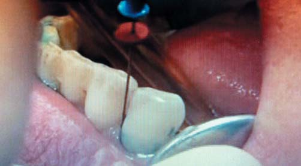
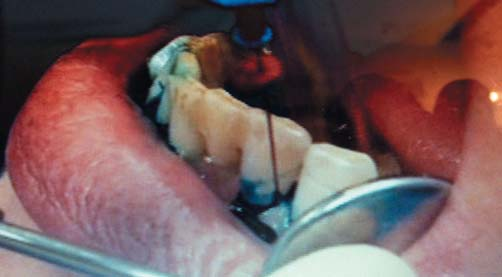

Наука · журнал «ДентАрт» 2017 №4
Фотодинамічна терапія у пародонтології
PHOTODYNAMIC THERAPY IN PARODONTOLOGY
Світло використовували з лікувальною метою протягом 4 тис. років. Ще стародавні єгиптяни застосовували перорально рослину Аmni Majus і світлові промені для терапії вітиліго. Також відомо, що греки та індуси застосовували для лікування псоріазу та вітиліго зерна Psoralea corylifolia, але ці знання були втрачені з невідомих причин і пізніше були перевинайдені західними цивілізаціями на початку ХХ ст. Нільс Фінсен у 1903 р. був удостоєний Нобелівської премії в галузі фототерапії, а сьогодні ми бачимо інтенсивні дослідження фотодинаміки живого і впровадження унікального методу сучасного лікування — власне фотодинамічної терапії (ФДТ). З 1990 р. цей метод визнаний найперспективнішим у лікуванні раку.1, 2
Механізм фотодинамічної терапії
Фотодинамічний процес полягає в активації фотоактивних речовин, здебільшого барвників, так званих фотосенсибілізаторів. При поглинанні фотосенсибілізатором кванта світла певної енергії і довжини хвилі генеруються нестійкі форми синглетного кисню та вільні радикали, що викликають у навколишньому середовищі окисно-відновні реакції і вибірковий цитотоксичний ефект. Наслідком цитотоксичної дії є пошкодження мембрани, мітохондрій, ДНК бактерій. Особливістю методу є те, що сенсибілізатор може накопичуватися переважно в уражених ділянках або з'єднуватися з патогенними бактеріями.
Як відомо, основна причина запального процесу тканин пародонту – наявність бактерій у тканинах пародонту та зубному нальоті. У важкодоступних ділянках, таких як фуркації, згини коренів, використання ручних кюреток та ультразвукових насадок недостатнє для їх знищення. Тому фотоактивна дезінфекція на сьогодні є доступною альтернативою антибіотикотерапії та застосуванню антисептичних речовин при лікуванні локальної інфекції, яка здебільшого спричинена збудниками з високою резистентністю до традиційних протимікробних засобів. Ротова порожнина і тканини пародонту – ідеальний об'єкт для такого лікування, оскільки більшість збудників знищується фотоактивною дезінфекцією з відповідним фотосенсибілізатором, бо має місце локалізація запального процесу.
Фотосенсибілізатори
Природа настільки досконала, що навіть деякі бактерії, а не тільки рослини, здатні виробляти власні фоточутливі агенти (порфірини), тому для їх активації достатньо лише опромінення світлом певної довжини хвилі. У роботах під керівництвом Konig та ін. досліджували фотодинаміку таких бактерій, як Porphyromonas і Prevotella, що містять власні фотосенсибілізатори – протохемін та протопорфірин IX.3-5 Було встановлено, що вплив видимого червоного світла гелій-неонового лазера (7.3 мВт, 632.8 нм) може спричинити їх знищення на 50%. Такі збудники, як Streptococcus mutans і Enterococcus faecalis, не мають власних фотосенсибілізаторів, тому вони стійкі до червоного світла. Для їх знищення слід застосовувати комбінацію світла та синтетичного фотосенсибілізатора.6, 7
Сьогодні з різною ефективністю застосовують такі фотосенсибілізатори:
- Tolonium chloride (toluidine blue O, TBO)
- Methylene blue
- Azure dyes
- Crystal violet
- Hematoporphyrins
- Aluminium disulphonated phthalocyanine (ADP)
- Chlorins (e.g. Photochlorines I, II, III)
- Phenothiazin
Через свої специфічні властивості деякі фотосенсибілізатори мають обмежений вплив на мікроорганізми. Це пов'язано з особливістю взаємодії цих речовин з клітиною через відмінності у їх електростатичній взаємодії з мембраною клітини. Фотосенсибілізатор може пошкодити клітину внаслідок проникнення у її мембрану або ж як при проникненні у клітинну стінку, так і при сполученні з нуклеїновими кислотами. Доведено, що для знищення бактерії фотосенсибілізатор не повинен проникати у середину клітини, що характерно для хлориду толонію.8 Для досягнення необхідного ефекту методу ФДТ мають враховуватися такі фактори та характеристики фотосенсибілізаторів:9
- типи клітин, у які буде подаватися фотосенсибілізатор;
- найоптимальніша концентрація;
- відповідна довжина хвилі для опромінення;
- розчинність у воді;
- ступінь іонізації;
- ефективність збудженого стану;
- тривалість перебування кисню у триплетному збудженому стані.
Інші дослідження провадилися при використанні хлориду толонію, метиленового синього.10, 11 Результати бактеріологічних тестів засвідчили, що при дії хлориду толонію (концентрація 25 мкг/мл) має місце пригнічення бактерій: у Porphyromonas gingivalis воно становило 97,2%, Actinobacillus aсtinomycetemcomitans – 99,9%, Fusobacterium nucleatum – 99,4%. При дії метиленового синього: у Porphyromonas gingivalis – 92,6%, Fusobacterium nucleatum — 99,9% Actinobacillus actinomycetemcomitans — 64,3%, що значно нижче, ніж при дії хлориду толонію. Іншим важливим результатом стало успішне застосування антитіл (сенсибілізатор 3 покоління) проти P. Gingivalis разом із хлоридом толонію.8
Результати експериментальних досліджень, де ми вивчали бактерицидну дію фотосенсибілізатора хлориду толонію (toluidineblue-O) на бактерії Actinobacillus actinomycetemcomitans, Porphyromonas gingivalis і Prevotella intermedia при періімплантиті, засвідчили, що ступінь знищення колоній бактерій становить три порядки, а у відсотковому співвідношенні — понад 92%. Такі показники підтвердили і дані досліджень під керівництвом Haas.12
Нині на ринку ми маємо досить великий вибір фотосенсибілізаторів. А спектральний діапазон запропонованих лазерних установок дозволяє досягнути відповідного результату.
Отже, для успішного застосування методики, досягнення бактерицидного ефекту слід отримати велику кількість реактивного кисню. Для цього потрібна мінімальна доза світла (12-100 Дж/см2) за досить короткий період часу. Кількість отриманих реактивних форм кисню залежатиме від потужності лазерного випромінювання та від концентрації фотосенсибілізатора. При збільшенні цих параметрів кількість реактивних форм кисню зростає.
Зазвичай при ФДТ відбувається максимальна абсорбція фотосенсибілізатором, тобто світлова енергія поглинається поверхневими молекулами фотосенсибілізатора. А це означає, що для ліпшого проникнення барвника у призначену зону слід кілька разів наносити і змивати фотосенсибілізатор. Щоб це компенсувати, треба збільшити потужність лазерного випромінювання. Таким вимогам найбільше відповідає нова комбінація лазерного світла та фотосенсибілізатора фенотіазин + діодний лазер (810 нм). Ми можемо підвищувати потужність лазерного випромінювання, отримувати глибшу пенетрацію, контролювати абсорбцію і трансмісію в залежності від концентрації фотосенсибілізатора.


Фото 1, 2. Фотодинамічна терапія при захворюваннях тканин пародонту.
Клінічні аспекти
| Обробка пародонтальних кишень |
| Обробка пришийкових ділянок зубів та імплантів, покритих нальотом |
| Дезінфекція відпрепарованої порожнини зуба перед внесенням пломбувального матеріалу |
| Бактерицидна обробка поверхні зуба перед герметизацією фісур |
| Дезінфекція тканин ротової порожнини перед хірургічним втручанням або під час нього |
| Лікування слизової оболонки з грибковими ураженнями |
| Лікування стоматитів |
При застосуванні цієї методики фотосенсибілізатор повинен вводитися на робочу поверхню на короткий проміжок часу, протягом 30 с, з метою накопичення його в тканині. Завдяки цьому поверхня стане чутливою до лазерного світла. Ми повинні пам'ятати про коефіцієнт поглинання, адже в залежності від виду тканини та довжини хвилі лазерного випромінювання глибина проникнення буде різною.
Важливий чинник при застосуванні методики – наявність ротової рідини, яка впливає на її ефективність. Внаслідок цього можуть мати місце такі фактори:
- часткова абсорбція лазерного світла, яка зменшує дію цитотоксичних молекул барвника;
- електростатична взаємодія з барвником як наслідок зменшення кількості молекул кисню, що зв'язуються з бактеріями і руйнують їх;
- присутність молекул типу каталази і лактопероксидази;
- прямий захист від синглетного кисню.
Висновки
ФДТ – метод, який забезпечує безболісну і швидку дезінфекцію локалізованих ділянок ротової порожнини без побічного впливу, в тому числі і профілактику. Лише з використанням фотосенсибілізатора, який наноситься на бактеріальне вогнище атравматичним стерильним шприцом, та лазерного опромінення за кілька хвилин досягається редукція пародонтальної патогенної мікрофлори та біофільму більш ніж на 92%. ФДТ – ефективний метод для лікування пародонтальних уражень, оскільки вогнища інфекції локалізовані і залягають на глибинах, доступних для проникнення фотонних пучків ближнього ІЧ-діапазону спектру. Обладнання та матеріали для ФДТ порівняно недорогі, доступні на ринку і сертифіковані, а протоколи – загальноприйняті. Перспективний напрямок сучасної фотодинаміки – альтернативні лазерам потужні світлодіоди з інтерфейсом на оптичному волокні та імпульсні режими опромінення, а також фотосенсибілізатори селективної дії з кон'югованими антитілами.
Література
- Smetana Z. Treatment of viral infections with 5-aminolevulinic acid and light / Smetana Z., Malik Z., Orenstein A., Mendelson E., Ben-Hur // Lasers Surg Med. – 1997. – Vol. 21. – P. 351–358.
- Photophysical and photobiological processes in the photodynamic therapy in tumours. J Photochem Photobiol B 39: 1–18, 1997.
- Shah H. The porphyrin pigmentation of subspecies of Bacteroides melaninogenicus / Shah H., Bonnett R., Mateen B. // Biochem. J. – 1997. – Vol. 180. – P. 45–50.
- Henry C. A. Phototoxicity of argon laser irradiation on biofilms of Porphyromonas and Prevotella species / Henry C.A., Dyer B., Wagner M., Judy M., Matthews J. L. // J. Photochem. Photobiol. – 1996. – Vol. 34. – P. 123–128.
- Glockmann E. Red light kills bacteria via photodynamic action / Glockmann E., Eick S., Pfister W. // Cell Mol Biol (Noisy-le-grand). – 2000. – Vol. 46. – P. 1297–1303.
- Effect of dosimetric and physiological factors on the lethal photosensitization of Porphyromonas gingivalis in vitro. Photochem Photobiol 65: 1026–1031, 1997.
- Williams J. A.: The effect of variable energy input from a novel light source on the photoactivated bactericidal action of toluidine blue O on Streptococcus mutans / Williams J. A., Pearson G. J., Colles M. J., Wilson M. // Caries Res. – 2003. – Vol. 37. – P. 190–193.
- MacRobert A. Antibody-targeted lethal photosensitization of Porphyromonas gingivalis / MacRobert A., Shepherd P., Cridland J., Wilson M. // Antimicrob. Agents Chemother. – 2000. – Vol. 44. – P. 2615–2618.
- Christodoulides N. Photodynamic Therapy as an Adjunct to Non-Surgical Periodontal Treatment: A Randomized, Controlled Clinical Trial / D. Nikolidakis, F. Schwarz, A. Sculean // Journal of Periodontology. – 2008. – Vol. 79. – N 9. – P. 1638-1644.
- Wilson M, Wilson H: Laser treatment. US Patent 5, 611,793. 1997.
- Dobson J. Sensitization of oral bacteria in biofilms to killing by light from a low-power laser / Dobson J., Wilson M. // Arch. Oral. Biol. – 1992. – Vol. 37. – P. 883–887.
- Haas R. Elimination of bacteria on different implant surfaces through photosensitization and soft laser // Clin. Oral. Impl. Res. – 1997. – Vol. 8. – P. 249–254.